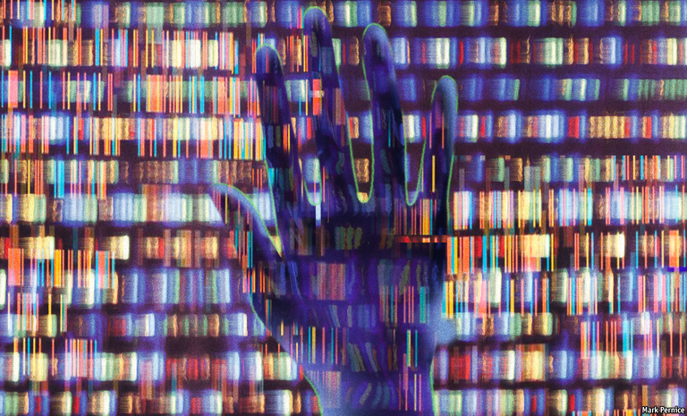

Text
2021-03-19T13:14:07+00:00
Gene-editing
基因编辑
基因編輯
Tomorrow’s world
明日世界
明日世界
Two books explore the power and peril of a technology that could transform the human race
有一种技术可能会改变人类，两本书探讨了它的威力和危险【《CRISPR人类》、《密码破解者》书评】
有一種技術可能會改變人類，兩本書探討了它的威力和危險【《CRISPR人類》、《密碼破解者》書評】
WHAT THE transistor once was to electronics, so CRISPR gene-editing is to biotechnology today. It changes the field from something interesting but clunky, and of restricted application, into a game of infinite possibility that almost anyone can play. Transistors led to computer chips and the youthful entrepreneurs of the Homebrew Computer Club in Silicon Valley. Similarly, CRISPR editing has let a new generation of would-be billionaires explore ideas that range from systematising the search for the proteins targeted by drugs, to breeding pigs that might act as organ donors for transplants.
当年晶体管对电子产业的推动有多大，今天CRISPR基因编辑对生物技术的影响就有多大。它正在将一个有趣但繁琐且应用有限的领域，转变为一个几乎人人都可以玩、具有无限可能性的游戏。晶体管催生了电脑芯片，造就了硅谷家酿计算机俱乐部（Homebrew Computer Club）里的年轻创业家。同样地，CRISPR编辑技术让新一代立志创富的人得以探索各种想法，从系统化地寻找可成为药物标靶的蛋白，到培育可以提供移植器官的猪。
當年晶體管對電子產業的推動有多大，今天CRISPR基因編輯對生物技術的影響就有多大。它正在將一個有趣但繁瑣且應用有限的領域，轉變為一個幾乎人人都可以玩、具有無限可能性的遊戲。晶體管催生了電腦芯片，造就了硅谷家釀計算機俱樂部（Homebrew Computer Club）里的年輕創業家。同樣地，CRISPR編輯技術讓新一代立志創富的人得以探索各種想法，從系統化地尋找可成為藥物標靶的蛋白，到培育可以提供移植器官的豬。
The transistor transformed the world; CRISPR may do that too. But it also offers a potential which transistors never did: that of transforming human beings themselves, by editing their genes. Those genes might be in body cells, in which case the changes would die with the person to whom they were made. Or they might be in germ cells, in which case they could be passed down the generations.
晶体管改变了世界，CRISPR或许也会。但它还具备晶体管从不具备的一种潜力：通过编辑人的基因，改变人类自身。被编辑的基因可能位于体细胞内，那么等到被编辑了基因的人死亡之时，所做的改变也会消失。它们也可能位于生殖细胞内，在这种情况下，改变可以代代相传。
晶體管改變了世界，CRISPR或許也會。但它還具備晶體管從不具備的一種潛力：通過編輯人的基因，改變人類自身。被編輯的基因可能位於體細胞內，那麼等到被編輯了基因的人死亡之時，所做的改變也會消失。它們也可能位於生殖細胞內，在這種情況下，改變可以代代相傳。
Henry Greely’s book is about the first known attempt to perform this more enduring trick, how it spectacularly backfired on the man who did it, and whether, and in what circumstances, anyone should ever try to do it again. Mr Greely is both a bioethicist and a lawyer at Stanford University, qualifications perfectly suited to his subject—the moment when germline editing went from being a topic of philosophical speculation to hard reality. That moment came on November 25th 2018, when He Jiankui, a researcher at the Southern University of Science and Technology, in Shenzhen, China, announced that he had taken it upon himself to edit the genomes of two embryonic human beings (later born as twin girls), and to do so at a point in their development when those changes would affect their germ cells.
亨利·格里利（Henry Greely）的书讲述的是后一种影响更为持久的改变——关于人类在这方面已知的首次尝试、其始作俑者如何事与愿违地吃了大苦头，以及是否还应该有任何人、在何种情况下再做尝试。格里利是斯坦福大学的一名生物伦理学家和律师，完全有资格讨论这个话题，也就是生殖系基因编辑从一个哲学思辨话题变为了活生生的现实的那一刻。那个时刻发生在2018年11月25日，中国深圳的南方科技大学的研究员贺建奎宣布他已经自行编辑了两个人类胚胎的基因组（后来诞生为一对双胞胎女婴），而他做出这项操作所处的胚胎发育时点将使这些修改影响到她们的生殖细胞。
亨利·格里利（Henry Greely）的書講述的是後一種影響更為持久的改變——關於人類在這方面已知的首次嘗試、其始作俑者如何事與願違地吃了大苦頭，以及是否還應該有任何人、在何種情況下再做嘗試。格里利是斯坦福大學的一名生物倫理學家和律師，完全有資格討論這個話題，也就是生殖系基因編輯從一個哲學思辨話題變為了活生生的現實的那一刻。那個時刻發生在2018年11月25日，中國深圳的南方科技大學的研究員賀建奎宣布他已經自行編輯了兩個人類胚胎的基因組（後來誕生為一對雙胞胎女嬰），而他做出這項操作所處的胚胎髮育時點將使這些修改影響到她們的生殖細胞。
As depicted in “CRISPR People”, Dr He is less the villain portrayed elsewhere than a naive and tragic character who was completely out of his depth. Certainly, he was driven by a yen for fame and fortune. But he seems also to have had a genuine desire to do good. His stated aim was to protect the girls from the threat of AIDS by tweaking their genes for a protein which the responsible virus, HIV, uses to lock onto cells it is about to infect. Almost up to the time that he went public with his experiment, he seems to have expected a hero’s welcome. Instead, he ended up with a three-year prison sentence.
《CRISPR人类》一书没有像我们在其他地方看到的那样把贺建奎描绘为一名恶人，而更多地是一个不知天高地厚的天真而悲剧的角色。当然，他是受到了渴望名利的驱使。但他似乎也是真诚地想要行善。他宣称自己调整女孩基因中的一种蛋白质（引发艾滋病的HIV病毒就是通过这种蛋白来感染受体细胞的）是为了保护她们免受艾滋病的威胁。直到他公开自己的实验之前，他似乎一直期待着受到英雄般的欢迎。但结果是，他被判入狱三年。
《CRISPR人類》一書沒有像我們在其他地方看到的那樣把賀建奎描繪為一名惡人，而更多地是一個不知天高地厚的天真而悲劇的角色。當然，他是受到了渴望名利的驅使。但他似乎也是真誠地想要行善。他宣稱自己調整女孩基因中的一種蛋白質（引發艾滋病的HIV病毒就是通過這種蛋白來感染受體細胞的）是為了保護她們免受艾滋病的威脅。直到他公開自己的實驗之前，他似乎一直期待着受到英雄般的歡迎。但結果是，他被判入獄三年。
An inauspicious beginning, then, for the idea of human germline editing. But Mr Greely does not dismiss the possibility of future, better-conducted attempts to do it. As forensically as you would expect for an author of his background, he sets out the circumstances in which real need exists and no alternatives are available. Preventing HIV infection is not among them: it is easy to avoid and is treatable if avoidance fails. Mostly, his list consists of couples who carry dangerous mutations in combinations that mean they are bound to be passed on to a child unless its genes are edited. This will not be many couples. But it will be a few.
就这样，人类生殖系基因编辑的想法有了一个不祥的开端。但是格里利并没有排除在未来做出更好尝试的可能性。格里利以符合他专业背景的严谨细致，列出了一些真正需要基因编辑且别无他选的情景。预防艾滋病毒感染并不在此列：避免感染不难，即使预防失败也可以治疗。他的清单主要包括那些基因组合携带危险突变的夫妇，意味着除非编辑基因，否则这些突变注定会遗传给孩子。这样的夫妇并不多，但还是会有一些。
就這樣，人類生殖系基因編輯的想法有了一個不祥的開端。但是格里利並沒有排除在未來做出更好嘗試的可能性。格里利以符合他專業背景的嚴謹細緻，列出了一些真正需要基因編輯且別無他選的情景。預防艾滋病毒感染並不在此列：避免感染不難，即使預防失敗也可以治療。他的清單主要包括那些基因組合攜帶危險突變的夫婦，意味着除非編輯基因，否則這些突變註定會遺傳給孩子。這樣的夫婦並不多，但還是會有一些。
Attitudes to germline editing may change if it proves safe and effective in these edge cases, and as knowledge increases of how human genomes work. At that point the real debate—about whether to allow the technique to be used to end the genetic lottery of reproduction, and maybe even to enhance human capabilities beyond any now currently found—will become live. How scientific knowledge expands in this way is the ultimate subject of “The Code Breaker”.
如果在这些极端案例中编辑生殖细胞被证明安全有效，加之对人类基因组运作方式的认知增长，人们对生殖系基因编辑的态度可能会转变。到那时，一场真正的辩论才会启动：是否允许用这项技术来终结繁衍中的遗传运气，甚至用来增强人类能力，全面超越现有水平。科学知识如何以这种方式扩展，正是《密码破解者》（The Code Breaker）一书的终极主题。
如果在這些極端案例中編輯生殖細胞被證明安全有效，加之對人類基因組運作方式的認知增長，人們對生殖系基因編輯的態度可能會轉變。到那時，一場真正的辯論才會啟動：是否允許用這項技術來終結繁衍中的遺傳運氣，甚至用來增強人類能力，全面超越現有水平。科學知識如何以這種方式擴展，正是《密碼破解者》（The Code Breaker）一書的終極主題。
Peering over the edge
窥探未来
窺探未來
Mr Greely’s book is a serious and scholarly work. Walter Isaacson’s, by contrast, is a page-turner. It weaves history and contemporary events into a narrative propelled by the career of its protagonist, Jennifer Doudna. In 2020 she was the joint winner with Emmanuelle Charpentier of the Nobel chemistry prize for—as the citation by Sweden’s Royal Academy of Sciences laconically puts it—“the development of a method for genome editing”.
格里利的书是一本严肃的学术著作。而沃尔特·艾萨克森（Walter Isaacson）这本书具有引人入胜的情节。书中以主角詹妮弗·杜德纳（Jennifer Doudna）的学术生涯为主线，穿插了各种历史和当代事件。2020年，她与埃玛纽埃勒·沙尔庞捷（Emmanuelle Charpentier）共同获得了诺贝尔化学奖，因为她们“开发了一种基因组编辑方法”——瑞典皇家科学院简洁地介绍说。
格里利的書是一本嚴肅的學術著作。而沃爾特·艾薩克森（Walter Isaacson）這本書具有引人入勝的情節。書中以主角詹妮弗·杜德納（Jennifer Doudna）的學術生涯為主線，穿插了各種歷史和當代事件。2020年，她與埃瑪紐埃勒·沙爾龐捷（Emmanuelle Charpentier）共同獲得了諾貝爾化學獎，因為她們“開發了一種基因組編輯方法”——瑞典皇家科學院簡潔地介紹說。
Most people agree with the academy in recognising these two as CRISPR editing’s principal inventors—though they were assisted by many others and drew on the work of many more. There are, however, dissenters who want to share the kudos, and particularly the patents. Dr Doudna and Dr Charpentier worked with bacteria. A lot of CRISPR’s applications will be in more complex creatures, such as human beings. And the researcher who first tried the technique on human cells was Feng Zhang of the Broad Institute in Cambridge, Massachusetts. The Broad’s lawyers are thus battling with those of the University of California, Berkeley, where Dr Doudna works, and with Dr Charpentier’s representatives, over whose patent applications give rights to what.
大多数人认同瑞典皇家科学院的看法，将这两人视为CRISPR编辑的主要发明者，尽管她们得到了许多人的协助，也吸收了更多人的研究成果。但是也有人持有异议，他们想要分享荣誉，更想分享专利。杜德纳和沙尔庞捷研究的是细菌。CRISPR很多时候会被应用于更加复杂的生物，例如人类。麻省剑桥博德研究所（Broad Institute）的张锋是第一个在人类细胞上尝试这项技术的研究员。因此，博德研究所的律师正与杜德纳所在的加州大学伯克利分校的律师以及沙尔庞捷的法律代表激烈交锋，争论各家专利申请的权利范围。
大多數人認同瑞典皇家科學院的看法，將這兩人視為CRISPR編輯的主要發明者，儘管她們得到了許多人的協助，也吸收了更多人的研究成果。但是也有人持有異議，他們想要分享榮譽，更想分享專利。杜德納和沙爾龐捷研究的是細菌。CRISPR很多時候會被應用於更加複雜的生物，例如人類。麻省劍橋博德研究所（Broad Institute）的張鋒是第一個在人類細胞上嘗試這項技術的研究員。因此，博德研究所的律師正與杜德納所在的加州大學伯克利分校的律師以及沙爾龐捷的法律代表激烈交鋒，爭論各家專利申請的權利範圍。
“The Code Breaker” casts light on this dispute, as it does on many other inner workings of American science. For Mr Isaacson, previously editor of Time magazine and chairman of CNN, author of acclaimed biographies of Steve Jobs and Leonardo da Vinci and now a history professor at Tulane University, is an insider’s insider. His book glitters with the names of the scientific great and good. Eric Lander, until recently head of the Broad and Joe Biden’s choice for chief scientific adviser, often takes the stage. So does George Church, a brilliant eccentric at Harvard who hopes to revive mammoths and was Dr Zhang’s PhD supervisor.
《密码破解者》揭示了这一争端，也带出了美国科学界许多不为人知的一面。毕竟，艾萨克森是深谙内幕之人，他曾是《时代》杂志的主编和美国有线电视新闻网（CNN）的董事长，撰写的乔布斯和达芬奇传记备受赞誉，目前是杜兰大学的历史学教授。这本书中闪耀着众多伟大科学家的名字。埃里克·兰德（Eric Lander）的名字反复出现，不久前他还是博德研究所所长，并被拜登选为首席科学顾问。另外还有乔治·丘奇（George Church），一位才华横溢、特立独行的哈佛大学教授，他希望复活猛犸象，也曾是张锋的博士生导师。
《密碼破解者》揭示了這一爭端，也帶出了美國科學界許多不為人知的一面。畢竟，艾薩克森是深諳內幕之人，他曾是《時代》雜誌的主編和美國有線電視新聞網（CNN）的董事長，撰寫的喬布斯和達芬奇傳記備受讚譽，目前是杜蘭大學的歷史學教授。這本書中閃耀着眾多偉大科學家的名字。埃里克·蘭德（Eric Lander）的名字反覆出現，不久前他還是博德研究所所長，並被拜登選為首席科學顧問。另外還有喬治·丘奇（George Church），一位才華橫溢、特立獨行的哈佛大學教授，他希望復活猛獁象，也曾是張鋒的博士生導師。
There are guest appearances by (among many others) Francis Collins, who has astutely survived from one presidential administration to another as head of the National Institutes of Health; David Baltimore, a Nobel laureate who in 1975 helped organise the first scientific meeting to look at the ethics of genetic engineering; and Anthony Fauci, adviser on infectious diseases to seven presidents. The book offers a sympathetic assessment of a luminary who has fallen from grace—James Watson, co-discoverer of the structure of DNA and founding head of the Human Genome Project, who is no longer received in polite society after making some disgraceful remarks about race and intelligence.
还有许多人物在书中客串亮相，包括美国国立卫生研究院（NIH）院长弗兰西斯·柯林斯（Francis Collins），在白宫几次易主中他都机敏地保住了职位；诺贝尔奖得主戴维·巴尔的摩（David Baltimore），他在1975年参与组织了首次探讨基因工程伦理问题的科学会议；安东尼·福奇（Anthony Fauci），曾任七任总统的传染病顾问。作者还带着同情的视角评价了一位跌下神坛的大咖——詹姆斯·沃森（James Watson）。他是DNA结构的共同发现者和人类基因组计划的创始负责人，因为发表了一些有关种族和智力的不光彩言论而遭遇上流社会的冷眼。
還有許多人物在書中客串亮相，包括美國國立衛生研究院（NIH）院長弗蘭西斯·柯林斯（Francis Collins），在白宮幾次易主中他都機敏地保住了職位；諾貝爾獎得主戴維·巴爾的摩（David Baltimore），他在1975年參與組織了首次探討基因工程倫理問題的科學會議；安東尼·福奇（Anthony Fauci），曾任七任總統的傳染病顧問。作者還帶着同情的視角評價了一位跌下神壇的大咖——詹姆斯·沃森（James Watson）。他是DNA結構的共同發現者和人類基因組計劃的創始負責人，因為發表了一些有關種族和智力的不光彩言論而遭遇上流社會的冷眼。
Aside from Dr Doudna, however, the real star of the story is RNA. This is the neglected third member of life’s molecular trinity—the other two being DNA and proteins. Indeed, RNA probably predates those other two molecules and, crucially for current events, it forms the genetic material of many of the viruses that afflict human beings, including the one that causes covid-19. It is also the molecule which guides the CRISPR-editing complex to the right part of the genome to edit.
然而，除杜德纳外，故事真正的主角是RNA。这是生命三大分子之中不受重视的第三个成员——另外两个是DNA和蛋白质。事实上，RNA的出现可能还早于其他两种分子，而且对当下至关重要的是，许多给人类带来痛苦的病毒的遗传物质都由RNA构成，包括新冠病毒。CRISPR编辑组合物也是由RNA分子引导到基因组的正确位置来实施编辑的。
然而，除杜德納外，故事真正的主角是RNA。這是生命三大分子之中不受重視的第三個成員——另外兩個是DNA和蛋白質。事實上，RNA的出現可能還早於其他兩種分子，而且對當下至關重要的是，許多給人類帶來痛苦的病毒的遺傳物質都由RNA構成，包括新冠病毒。CRISPR編輯組合物也是由RNA分子引導到基因組的正確位置來實施編輯的。
Mr Isaacson traces Dr Doudna’s career from its beginnings as a PhD student of Jack Szostak, another pillar of the scientific establishment and one of the proponents of the idea that the origin of RNA and the origin of life are intimately bound up. He follows the byways of her early studies on RNA enzymes, known as ribozymes, and her first introduction to CRISPR in its natural role as a bacterial defence against viruses. Later comes her fortuitous meeting with Dr Charpentier at a scientific conference in Puerto Rico. Fortune favours the prepared mind, and hers was well prepared to profit from what Dr Charpentier told her about her own work on CRISPR. But the meeting itself was serendipity.
艾萨克森回顾了杜德纳的学术生涯，从她师从杰克·绍斯塔克（Jack Szostak）攻读博士开始。绍斯塔克是正统科学圈的另一位泰斗，主张RNA起源与生命起源密切相关的观点。接着他介绍了杜德纳早期对RNA酶（称为核酶）的一些冷门研究，以及她如何首次了解到CRISPR在细菌抵御病毒过程中的天然角色。后来，她在波多黎各的一次学术会议上偶遇了沙尔庞捷。幸运总是眷顾那些有准备的人，当沙尔庞捷告诉她自己的CRISPR研究时，杜德纳已经有了很好的准备来抓住其中的机会。但这次会面本身是一种意外之缘。
艾薩克森回顧了杜德納的學術生涯，從她師從傑克·紹斯塔克（Jack Szostak）攻讀博士開始。紹斯塔克是正統科學圈的另一位泰斗，主張RNA起源與生命起源密切相關的觀點。接着他介紹了杜德納早期對RNA酶（稱為核酶）的一些冷門研究，以及她如何首次了解到CRISPR在細菌抵禦病毒過程中的天然角色。後來，她在波多黎各的一次學術會議上偶遇了沙爾龐捷。幸運總是眷顧那些有準備的人，當沙爾龐捷告訴她自己的CRISPR研究時，杜德納已經有了很好的準備來抓住其中的機會。但這次會面本身是一種意外之緣。
Genes out of the bottle
打开封印
打開封印
In telling her tale, Mr Isaacson captures the scientific process well, including the role of chance. The hard graft at the bench, the flashes of inspiration, the importance of conferences as cauldrons of creativity, the rivalry, sometimes friendly, sometimes less so, and the sense of common purpose are all conveyed in his narrative. “The Code Breaker” describes a dance to the music of time with these things as its steps, which began with Charles Darwin and Gregor Mendel and shows no sign of ending.
在讲述杜德纳的故事的过程中，艾萨克森生动展现了科学的进程，包括运气的作用。实验室里的艰辛、灵感的闪现、学术会议作为创造力熔炉的重要作用、时而友好时而较劲的竞争，以及共同的使命感，都在他的叙述中一一得到体现。在《密码破解者》的描述中，这些元素跟随着时间的节拍激舞飞扬，从达尔文和孟德尔的时代开始，永无止境。
在講述杜德納的故事的過程中，艾薩克森生動展現了科學的進程，包括運氣的作用。實驗室里的艱辛、靈感的閃現、學術會議作為創造力熔爐的重要作用、時而友好時而較勁的競爭，以及共同的使命感，都在他的敘述中一一得到體現。在《密碼破解者》的描述中，這些元素跟隨着時間的節拍激舞飛揚，從達爾文和孟德爾的時代開始，永無止境。
What CRISPR and its successors will mean for humanity over the next few decades is anybody’s guess. At minimum, better health and more abundant food. At maximum, perhaps, a world where machines now made of metal and plastic are instead made of flesh and bone, pets and garden plants can be designed to order, mammoths once again thunder over the tundra, and human reproduction itself ceases to be a matter of luck. ■
在未来几十年里，CRISPR及其后续技术对人类意味着什么，谁也说不准。至少，它们会让人类更健康，食物更充足。而它潜力的极限或许是造就一个全新的世界——现在用金属和塑料制成的机器将变成血肉之躯，人们可以随心所欲地设计自己的宠物和花园植物，猛犸象将再次在苔原上呼啸，而人类的繁衍将不再听天由命。
在未來幾十年里，CRISPR及其後續技術對人類意味着什麼，誰也說不準。至少，它們會讓人類更健康，食物更充足。而它潛力的極限或許是造就一個全新的世界——現在用金屬和塑料製成的機器將變成血肉之軀，人們可以隨心所欲地設計自己的寵物和花園植物，猛獁象將再次在苔原上呼嘯，而人類的繁衍將不再聽天由命。